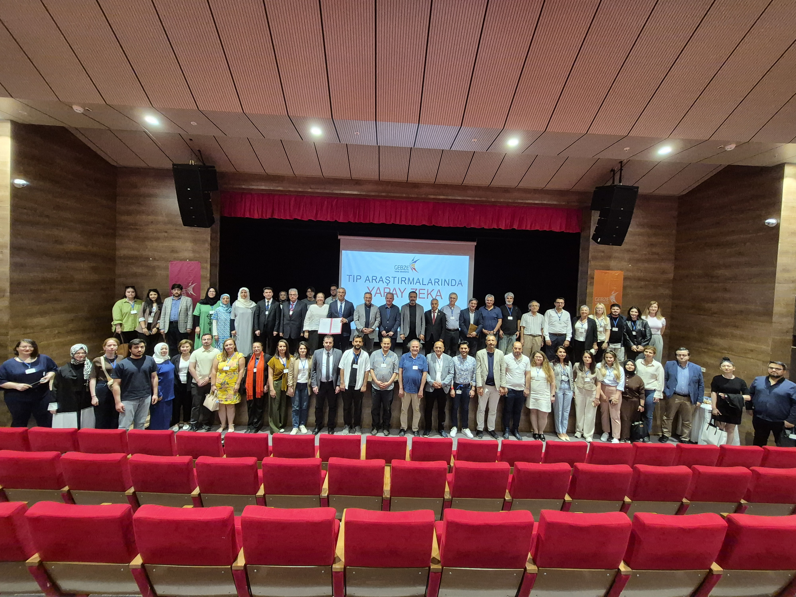
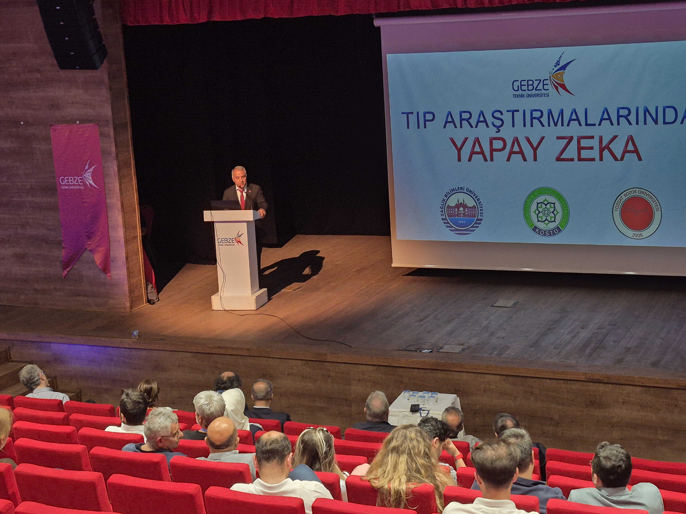
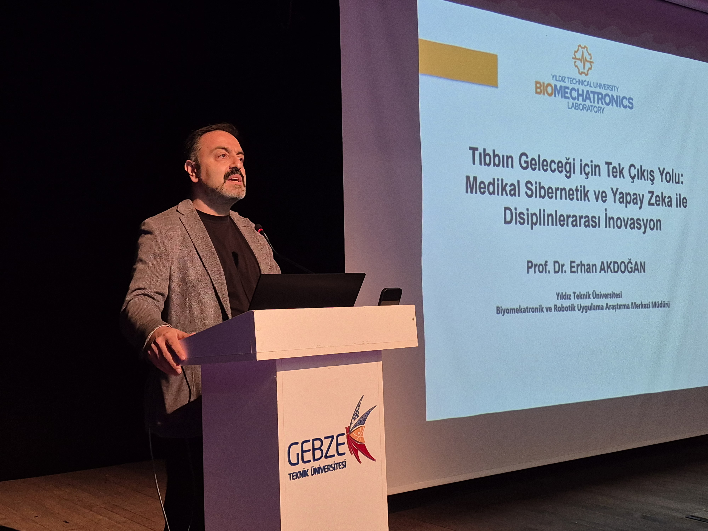
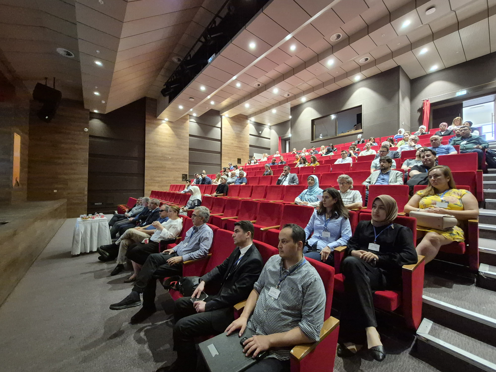
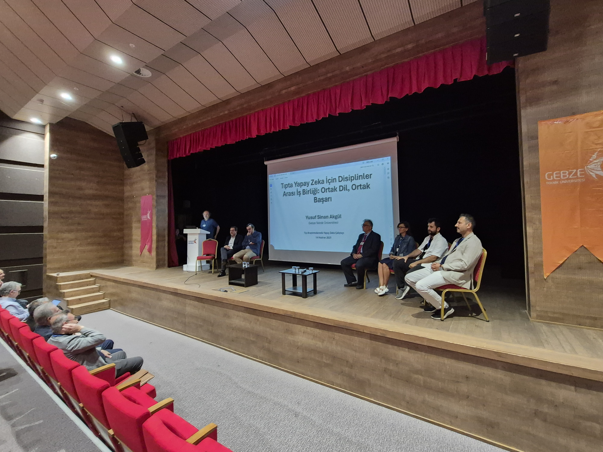
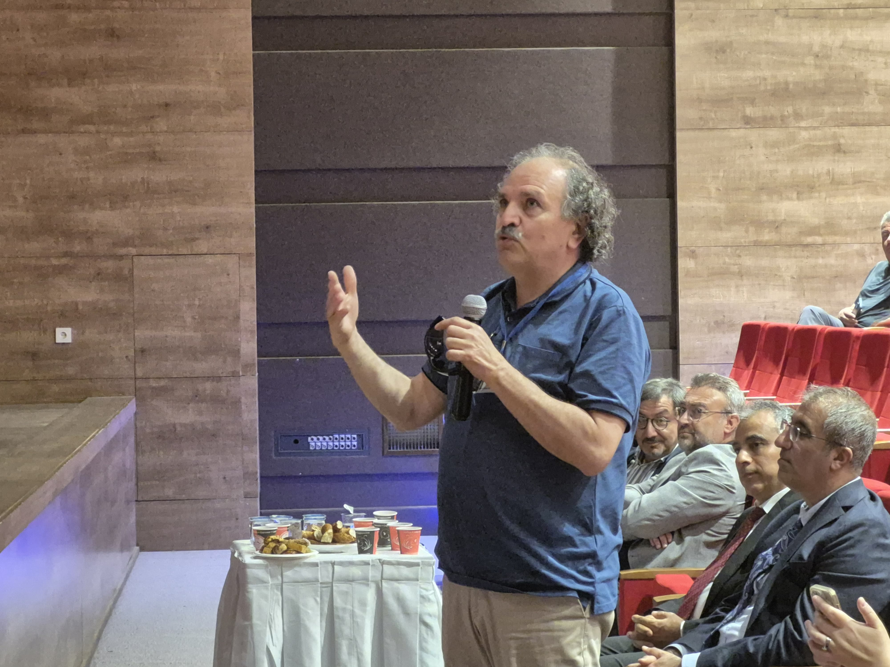

Tıp Araştırmalarında Yapay Zeka Çalıştayı: Disiplinlerarası İş Birliğinde Yeni Dönem
14 Haziran 2025 - Gebze Teknik Üniversitesi (GTÜ), Sağlık Bilimleri Üniversitesi (SBÜ), Kocaeli Sağlık ve Teknoloji Üniversitesi (KOSTÜ) ve Yozgat Bozok Üniversitesi (YOBU) iş birliğiyle düzenlenen "Tıp Araştırmalarında Yapay Zeka Çalıştayı", GTÜ Kongre ve Kültür Merkezi'nde başarıyla gerçekleştirildi. Sağlık bilimlerinde yapay zeka uygulamalarına odaklanan çalıştay, disiplinlerarası araştırma ekosisteminin geliştirilmesi ve teknolojik yeniliklerin tıp alanına entegrasyonu konularında önemli bir platform oluşturdu.
Sağlık Bilimlerinin Dijital Dönüşümünde Kritik Adım
09:00-15:15 saatleri arasında tam gün süren çalıştayın açılış konuşmalarını, etkinliğin amaç ve hedeflerini sunan Doç. Dr. Mehmet Göktürk'ün ardından, GTÜ Rektör Yardımcısı Prof. Dr. Elif Damla Arısan, SBÜ Rektör Yardımcısı Prof. Dr. Yunus Karakoç, YOBU Rektörü Prof. Dr. Evren Yaşar ve KOSTÜ Rektörü Prof. Dr. Muzaffer Elmas gerçekleştirdi. Konuşmacılar, yapay zekanın sağlık teknolojilerindeki dönüştürücü gücüne ve üniversiteler arası iş birliğinin stratejik önemine vurgu yaptılar.
Çalıştayın temel hedefinin, geleneksel disiplin sınırlarını aşarak sağlık alanındaki karmaşık problemlere teknolojik çözümler üretebilecek disiplinlerarası araştırma ekosisteminin temellerini atmak olduğu belirtildi.
Medikal Sibernetik ve Yapay Zeka Vizyonu
Etkinliğin ana konuşması, Yıldız Teknik Üniversitesi Biyomekatronik ve Robotik Uygulama Araştırma Merkezi Müdürü Prof. Dr. Erhan Akdoğan tarafından "Tıbbın Geleceği için Tek Çıkış Yolu: Medikal Sibernetik ve Yapay Zeka ile Disiplinlerarası İnovasyon" başlığıyla sunuldu. Doç. Dr. Yakup Genç'in moderatörlüğünde gerçekleşen oturumda, sağlık hizmetlerindeki dijital dönüşüm süreci, yapay zekanın sağlık hizmetlerine entegrasyonu ve dünya genelindeki başarılı uygulamalar ele alındı.
Disiplinlerarası İş Birliğinde Ortak Dil Arayışı
Çalıştayın en dikkat çeken bölümlerinden biri, GTÜ Mühendislik Fakültesi Dekanı Prof. Dr. Yusuf Sinan Akgül'ün moderatörlüğünde gerçekleştirilen "Tıpta Yapay Zeka İçin Disiplinler Arası İş Birliği: Ortak Dil, Ortak Başarı" paneli oldu. Panelde, Doç. Dr. Fatih Tarlak (GTÜ), Prof. Dr. Murat Baykara (SBÜ), Prof. Dr. Ahmet İlker Tekkeşin (SBÜ), Doç. Dr. Özer Çelik (WeAccess AI Kurucusu, Eskişehir Osmangazi Üniversitesi) ve Dr. Öğr. Üyesi Sema Candemir (Eskişehir Teknik Üniversitesi) yer aldı.
Panel kapsamında disiplinlerarası çalışmanın temel prensipleri, başarılı akademik iş birliği modelleri ve ortak bir dil geliştirmenin önemi ve yöntemleri tartışıldı. Özellikle mühendislik ve tıp disiplinleri arasındaki iletişim köprülerinin kurulması ve sürdürülebilir iş birliği mekanizmalarının geliştirilmesi konuları ön plana çıktı.
Proje Geliştirme ve Takım Oluşturma Çalışmaları
Çalıştayın öğleden sonraki bölümünde iki paralel oturum gerçekleştirildi. "Takım Oluşturma ve Proje Önerisi Geliştirme" oturumunda katılımcılar, karma gruplar halinde proje önerisi geliştirme çalışması yaptılar. Katılımcıların ilgi alanlarına göre masa seçimi, multidisipliner takımların oluşturulması ve ortak araştırma metodolojilerinin belirlenmesi süreçleri deneyimlendi.
"İş Birliği Potansiyeli Olan Araştırma Alanları" oturumunda ise üniversiteler arası iş birliği için öncelikli alanların belirlenmesi, mevcut araştırma altyapılarının paylaşımı ve fon kaynaklarının tanıtımı konularında çalışmalar yapıldı. TÜBİTAK ve TÜSEB çağrılarına odaklanılarak ortak projelerin geliştirilmesi fırsatları değerlendirildi.
Stratejik İş Birliği Protokolü İmzalandı
Çalıştay kapsamında GTÜ ve SBÜ arasında sağlık ve tıp araştırmalarında iş birliğini kapsayan protokol imzalandı. Bu protokol, üniversiteler arası iş birliğinin kurumsallaşması ve sürdürülebilir hale getirilmesi açısından önemli bir kilometre taşı olarak değerlendiriliyor.
Somut Çıktılar ve Gelecek Planları
Çalıştayın kapanış oturumunda sunulan değerlendirmelerde, etkinliğin sadece teorik bilgi paylaşımıyla sınırlı kalmayıp somut sonuçlar doğurduğu vurgulandı. Katılımcılar tarafından fonlanabilir proje önerileri geliştirildi, ortak araştırma metodolojileri belirlendi ve pilot uygulamalar için zemin hazırlandı.
Çalıştayın orta ve uzun vadeli etkilerinin ortak yayınlar ve uluslararası projeler, yeni lisansüstü programlar ve araştırma merkezleri, sektör ortaklıkları ve teknoloji transferi ile genç araştırmacıların yetiştirilmesi alanlarında olması bekleniyor.
Türkiye'nin Küresel Rekabet Gücüne Katkı
Düzenleme Kurulu adına açıklama yapan Dr. Öğr. Üyesi Tuncay Soylu (SBÜ), bu çalıştayın Türkiye'nin sağlık teknolojileri alanında küresel rekabet gücünü artırmak için atılan stratejik bir adım olduğunu belirtti. Geleceğin sağlık hizmetlerinin şekillendirilmesinde disiplinlerarası iş birliğinin kritik önem taşıdığı vurgulandı.
Katılımcılar, çalıştayın tıp ve yapay zeka alanındaki bilgi ve deneyimlerini artırmalarına büyük katkı sağladığını ve gelecekteki iş birliği planları için güçlü bir temel oluşturduğunu ifade ettiler.